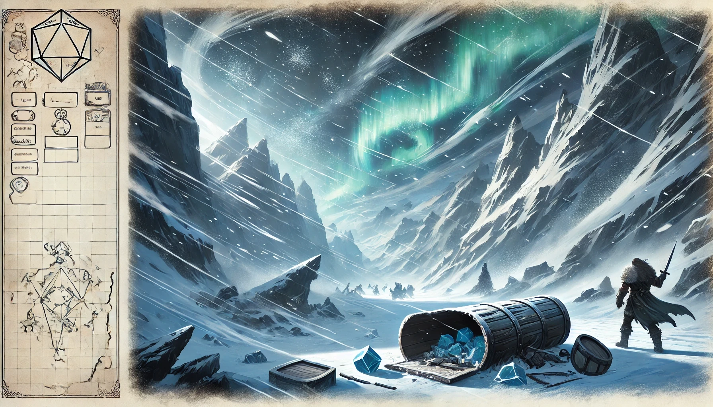

Environment & Pursuit Dynamics: Staying close to the horde offers relief from the worst of the storm but increases the risk of encounters. Traveling farther increases storm exposure but reduces direct confrontations.
1. Morning Phase
Resolve Daily Environmental Toll: Lose 1 Blizzard Token daily due to storm conditions.
Camp Breakdown Challenge: DC 14 (Strength, Dexterity, Survival, or Wisdom). Results affect your starting position:
Select Pursuit Level:
2. Travel Phase
3. Evening Phase
Camp Setup Challenge: DC 14 (Strength, Dexterity, Survival, or Wisdom). Results affect recovery:
Spend Blizzard Tokens: Gain advantages for the next day, such as skipping hazards or reducing exhaustion risk.
| Tokens Remaining | Depletion State | Effect |
|---|---|---|
| 4 Tokens | Strained Endurance | +2 to all DCs (Weather, Hazard, Camp Setup/Breakdown). |
| 2 Tokens | Critical Reserves | Daily Constitution saves (DC 14) to avoid exhaustion. |
| 0 Tokens | Severe Exposure | Constitution saves (DC 16) to avoid exhaustion. No rest. |
| Condition | Modifier |
|---|---|
| Blizzard Tokens | |
| 5+ Tokens | +0 |
| 4 Tokens | +2 |
| 2 Tokens | +4 |
| 0 Tokens | +6 |
| Shelter | |
| Fully Functional Tent | +0 |
| Damaged Tent | +2 to Camp DCs |
| No Tent | +3 (auto fail setup). |
| Exhaustion Levels | +1 per level. |
| Level | Effect |
|---|---|
| 1 | Disadvantage on ability checks. |
| 2 | Speed halved. |
| 3 | Disadvantage on attacks and saves. |
| 4 | Hit point maximum halved. |
| 5 | Speed reduced to 0. |
| 6 | Death. |